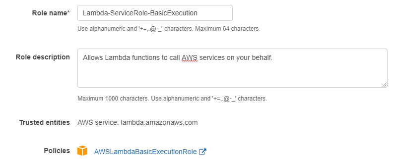
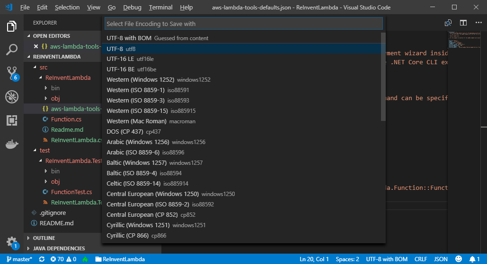
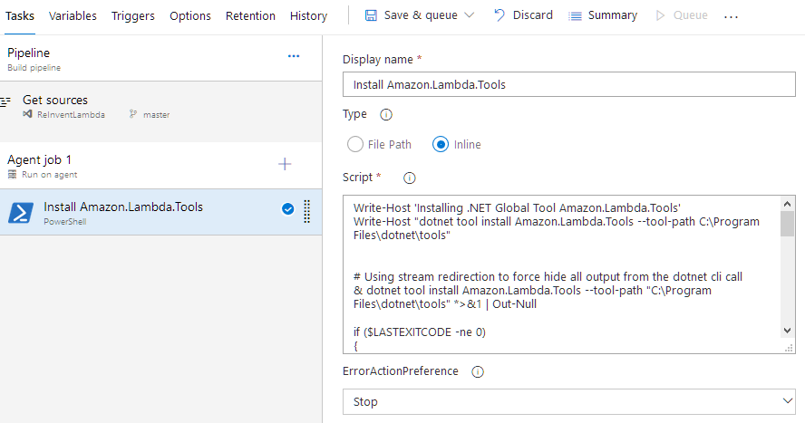
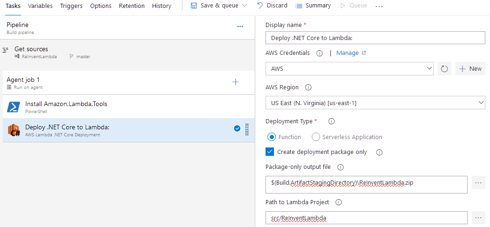
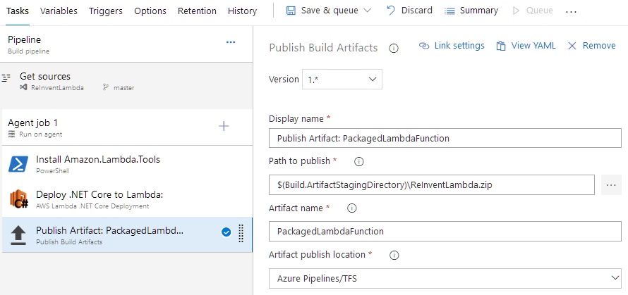
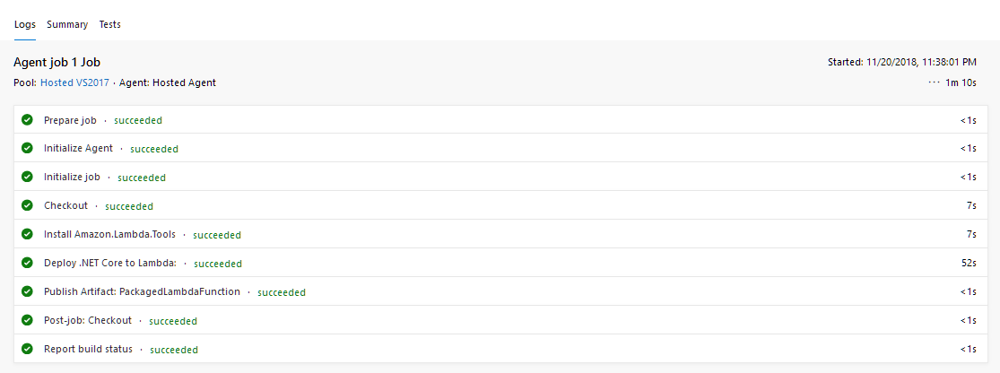

Deploy AWS Lambda with Azure DevOps (VSTS)
Introduction
In this lab, you will learn how to use Azure DevOps and AWS VSTS tool to deploy AWS Lambda project.
Prerequisites
- Complete the Lab Setup.
- Create an IAM User using the AWS Management Console, as described here.
- Create an Access Key for the IAM User by following these instructions.
- You will need the AWS CLI installed and configured. If you don't already have it you can follow these instructions.
- You will need Git installed locally. If not, you can install as described here.
- You will need the .NET Core CLI installed. If not, install as described in these instructions.
Create an IAM Role for your Lambda Function
In this section we will create an IAM Role in your AWS Account for the Lambda Function. This is the permission that the lambda function can do when it assumes this role. Learn more about Lambda role here.
- Log in to your AWS Account and go to IAM Console.
- Go to Role and click Create Role. Select AWS Service for Type of trusted entity then slect Lambda as the service that will use this role. Click Next: Permission
- Filter and Select AWSLambdaBasicExecutionRole and click Next: Tags
- Click Next: Review and name the Role. Review the configuration and click Create Role

Create Azure DevOps project
In this section we will create an Azure DevOps project and clone the repo to your local working environment.
- Log in to your Azure DevOps account and create a project. It takes some time to complete.

- Create a Personal Access Token.
- Click on your avatar in the top-right of the screen and then click Security.
- Under the Personal Access Tokens section, click New Token.
- Enter a value in the Name field, select Full Access under Scope, and click Create.
- Copy the token to a temporary storage location and click Close.
- Create AWS service connection for this project.
- On your Summary page on the project, click Project settings on the bottom left menu bar
- Click Service connection under Pipelines then click + New service connection.
- Enter Access Key ID and Secret Access Key of your IAM user.


For more information see this instruction to Add AWS service connection for this project.
- Click in the project and select Repos. Copy Git repo address.

Select Add ReadMe file and add gitignore for VisualStudio. Click Initialize.
On you command line type the command below to clone your newly created code repository to your local machine. Enter your Azure DevOps username and use your Personal Access Token as the password. use git repo you copied in step 4 in the git clone command.
git clone https://{git repo account}@dev.azure.com/{git repo account}/ReInventLambda/_git/ReInventLambda
Create a simple Lambda project
In this session, we will create a simple dotnet Lambda project using donet CLI and push it to Azure DevOps git repository.
- Install AWS Lambda template.
dotnet new -i Amazon.Lambda.Templates
Once the install is complete, verify if the Lambda templates are listed.
dotnet new -all

- Create a new Lambda project. Name function name ReInventLambda, choose your AWS profile and AWS region.
dotnet new lambda.EmptyFunction --name ReInventLambda --profile default --region us-west-2
- Browse into the folder. Examine the folder structure.
cd ReInventLambda
- Use your favorite text editor to open ..\ReInventLambda\src\ReInventLambda\aws-lambda-tools-defaults.json and resave it as UTF-8 (with no BOM) encoding. In this example, we use Visual Studio Code.

- Commit the new code to local and remote (Azure DevOps) repository.
git add * git commit -m "Lambda empty function first commit" git push
- In Azure DevOps, examine your repo.
Create Build pipeline
In this section, we will configure Build Pipeline using AWS Lambda.NET Core Deployment task. We will output the artifact to Azure DevOps.
- Select Pipelines, Builds, hit + button and select New build pipeline.
- Click Use the visual designer.
- Select Source, Team project, Repository and branch. Click Continue.
- Select a source: Azure Repos Git
- Team project: ReInventLambda
- Repository: ReInventLambda
- Default branch for manual and scheduled builds: master
- Select start with an Empty job by clicking Empty job.

- Under Tasks, Pipeline, name the Build pipeline and select Hosted VS2017 as Agent pool.
- Under Agent job 1, name Agent job and select inherit from pipeline for Agent pool.
- Click + button at Agent job 1 task, to Add a task. In the search box, enter PowerShell. Add PowerShell Task.
- Display name: Install Amazon.Lambda.Tools
- Type: Inline
- Scripts: Enter the script bellowed.
Write-Host 'Installing .NET Global Tool Amazon.Lambda.Tools' Write-Host "dotnet tool install Amazon.Lambda.Tools --tool-path C:\Program Files\dotnet\tools" # Using stream redirection to force hide all output from the dotnet cli call & dotnet tool install Amazon.Lambda.Tools --tool-path "C:\Program Files\dotnet\tools" *>&1 | Out-Null if ($LASTEXITCODE -ne 0) { Write-Verbose -Message 'Error installing, attempting to update Amazon.Lambda.Tools' # When "-Verbose" switch was used this output was not hidden. # Using stream redirection to force hide all output from the dotnet cli call & dotnet tool update Amazon.Lambda.Tools --tool-path "C:\Program Files\dotnet\tools" *>&1 | Out-Null if ($LASTEXITCODE -ne 0) { $msg = @" Error configuring .NET CLI AWS Lambda deployment tools: $LastExitCode CALLSTACK:$(Get-PSCallStack | Out-String) "@ throw $msg } } Write-Host "Confirm if the tool is intalled" get-childitem "C:\Program Files\dotnet\tools" Write-Host "Add path to AWS tool to env variable." $env:Path += ";C:\Program Files\dotnet\tools" Write-Host "PATH variable is " $env:Path Write-Host "##vso[task.setvariable variable=PATH;]${env:PATH};$env:Path";

This task is necessary if you are using the new .NET Core Global tool (.NET Core SDK 2.1.300 and later versions). With this change, the csproj file no longer include DotNetCliToolReference (see below). That means dotnet restore will not automatically download the tool during the build time. This task downloads and saves the tool in the specified location. The tool will be referenced in the next step.
<ItemGroup> <DotNetCliToolReference Include="Amazon.Lambda.Tools" Version="2.2.0" /> </ItemGroup>
- Click + button at Agent job 1 task to add a task. In the search box, enter aws. This should filter only AWS related tasks. Select AWS Lambda.NET Core Deployment then click Add.
- Configure Deploy.NET Core to Lambda task.
- Display name: Deploy .NET Core to Lambda
- AWS Credentials: AWS Note: AWS Credential was created in prerequisites section.
- Region: Select AWS Region where you wanted your Lambda function to reside.
- Deployment Type: Function
- Check Create deployment package only
- Package-only output file: $(Build.ArtifactStagingDirectory)\ReInventLambda.zip
- Path to Lambda Project: browse to the directory containing the Lambda Project file
Do not need to fill Lambda Function Properties, Advanced, Control Options and Output Variables.

- Click + to add a task. Select Publish build Artifacts and click Add. Configure task as seen below.
- Display name: Publish Artifact: PackagedLambdaFunction
- Path to publish: $(Build.ArtifactStagingDirectory)\ReInventLambda.zip Note: this is Package-only output file from the previous step
- Artifacts name: PackagedLambdaFunction
- Artifact publish location: Azure Pipelines/TFS

Select Save & queue.
- Examine Build logs.

- If you face this error, use your favorite text editor to re-save aws-lambda-tools-defaults.json with UTF-8 with no BOM file encoding.

Create Release pipeline
In this section, we will use AWS Lambda Deploy Function task to deploy the output build artifact from the last section to AWS Lambda function.
- Select Pipelines, Releases and New Release pipeline. In the New release pipeline, select start with an Empty job.
- To add the artifact to the release pipeline, click Add an Artifact and configure as followed:
- Source type: Build
- Project: ReinventLambda
- Source (Build Pipeline): ReinventLambda-CI
- Default version: Latest
- Source alias: _ReinventLambda-CI
Click Add.

- Click Stage and name the stage.
- Click 1 job, 0 task to view task.
- At Agent job, click + to add a task. In the search box, type AWS. Select AWS Lambda Deploy Function and click Add.

- Configure Deploy Lambda Function task.
- Display name: Deploy Lambda Function: ReInventLambda
- AWS Credentails: AWS Note: AWS Credential was created in prerequisites section.
- Region: Select the same AWS Region as in the previous step.
- Deployment Mode: Update code and configuration (or create a new funtion).
- Function name: ReInventLambda
- Function Handler: ReInventLambda::ReInventLambda.Function::FunctionHandler
- Runtime: dotnetcore2.1
- Code Location: Zip file in the work area
- Zip File Path: $(System.DefaultWorkingDirectory)/_ReInventLambda-CI/PackagedLambdaFunction/ReInventLambda.zip
- Role ARN or Name: Lambda-ServiceRole-BasicExecution Note: This is the Lambda service role created in Prerquisite section.
- Memory Size: 256
- Timeout: 30
- Check Publish
Leave everything else as default in other sections. Click Save (at the top) to save the pipeline.

- At the top, click Release and select Create a release. Review the release and click Create.
- Select the release to view its status.

- Log in to AWS Lambda console to view the Function.
Testing the function using .net CLI
In this section, we will use dotnet CLI to test our newly created Lambda Funtion
Install dotnet Lambda Tools and test the function.
dotnet tool install -g Amazon.Lambda.Tools dotnet lambda invoke-function ReInventLambda --payload "Just checking"